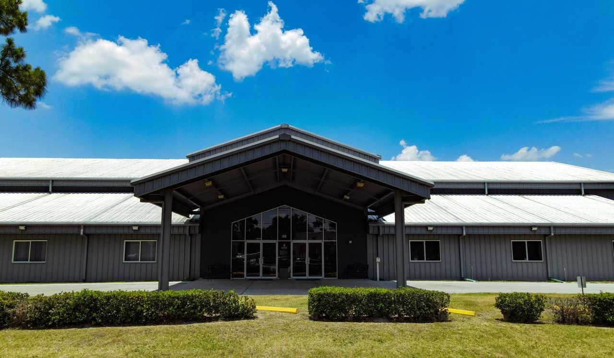
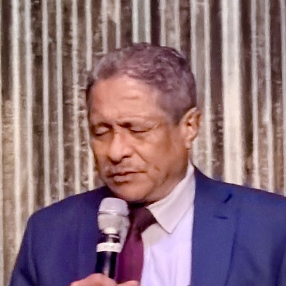

Iglesia Bautista · Lakeland, FloridaBaptist Church · Lakeland, Florida
Ebenezer.
Hasta aquí nos ayudó el Señor.Thus far the Lord has helped us.1 Samuel 7:12
Una iglesia bilingüe para toda la familia. Cultos en español con algo de inglés, y jóvenes en inglés.A bilingual church for the whole family. Services in Spanish with some English, and youth in English.

01HorariosTimes
Cada domingo y jueves.Every Sunday and Thursday.
DomingoSunday
JuevesThursday
02Conferencia de jóvenesYouth conference
Run the
Race.
2.ª conferencia anual de jóvenes. Dos noches de predicación, adoración y amistad. ¡Invita a un amigo!2nd annual youth conference. Two nights of preaching, worship, and friendship. Bring a friend!

Escanea para inscribirteScan to register
03BienvenidaWelcome
“Aquí hay un lugar para ti y tu familia. Ven tal como eres; te recibiremos con los brazos abiertos.”“There is a place here for you and your family. Come as you are; we’ll welcome you with open arms.”

Pastor Ismael MendozaPastorPastor
04MinisteriosMinistries
Un lugar para cada generación.A place for every generation.
JóvenesYouth
Jueves 6:30 PM y Escuela Dominical. Enseñanza en inglés.Thursdays 6:30 PM and Sunday School. Taught in English.
AdultosAdults
Servicio de oración los jueves y adoración los domingos.Thursday prayer service and Sunday worship.
Escuela DominicalSunday School
12:45 PM, clases bíblicas para todas las edades, desde la cuna hasta adultos.12:45 PM, Bible classes for all ages, nursery through adults.
FamiliasFamilies
Café y compañerismo cada domingo a la 1:30 PM.Coffee and fellowship every Sunday at 1:30 PM.
05VisítanosVisit
901 W Beacon Rd
Lakeland, FL 33803
Nos reunimos en el edificio de Legacy Christian Church.We meet in the Legacy Christian Church building.